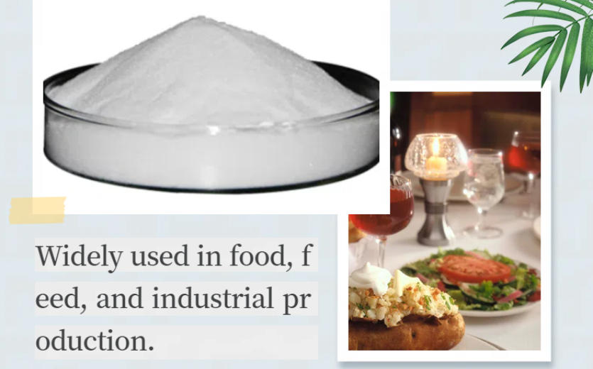

Эмульгация и буферизация
JECFA распознает функции эмульгатора и буферизации. TSPP может влиять на рН, поведение белка и стабильность эмульсии.
Фосфат пищевого класса · Дифосфат натрия · INS 450(iii)
Пирофосфат тетрасодия представляет собой щелочный, водорастворимый дифосфат натрия, используемый в отдельных пищевых системах для эмульгирования, буферизации, секвестрации и управления водными ресурсами.

Кратко о продукте
Пищевой тетрасодиевый пирофосфат (TSPP), также называемый тетрасодиевым дифосфатом, представляет собой INS 450 (iii).4P2O7CAS 7722-88-5.
Эта страница отделяет поставляемую коммерческую спецификацию от независимых идентификационных ссылок. Юридическое использование, дозировка и документация должны быть подтверждены для рынка назначения и точного применения продуктов питания.
Функциональные роли
Производительность зависит от сорта, дозировки, состава, условий процесса и применимых правил питания.
JECFA распознает функции эмульгатора и буферизации. TSPP может влиять на рН, поведение белка и стабильность эмульсии.
TSPP может связывать выбранные ионы металлов и используется в подходящих молочных, мясных, сырных и напитков составах.
Области применения
Это области скрининга приложений, а не универсальные разрешения на использование или гарантированные результаты.
Оцените удержание воды, связывание, выход, текстуру и фосфатный баланс в фактической системе белка и соли.
Может поддерживать эмульгацию, минеральный баланс, расплав и текстуру при использовании в квалифицированной эмульгирующей соляной системе.
Буферизация экрана, управление водой и белковые взаимодействия в полной формулировке.
Оценка pH, ясности, вкуса и минеральной совместимости перед коммерческим использованием.
Подтверждают протекание, последовательность растворения и совместимость с кислотами, белками и другими минеральными солями.
TSPP может быть смешан с другими разрешенными фосфатами после проверки производительности и регулирования.
Поставляемые технические данные
Приведенные ниже значения воспроизводят поставляемый товарный лист. Они не являются серийным СОА или универсальным нормативным стандартом. Подтверждают текущую подписанную спецификацию и методы до утверждения.
| Тестовый элемент | Подразделение | Спецификация |
|---|---|---|
| Содержание пирофосфата тетрасодия | % | 96.5–100.5 |
| P2O5 | % | 52.5–54 |
| Потери при сушке | % | ≤0.5 |
| Нерастворимая материя | % | ≤0.20 |
| pH раствора 10 г/л | — | 9.9–10.7 |
| Ортофосфат | — | Пройти тест |
| Мышьяк (As) | % | ≤0.0003 |
| Хэви-металы (как Pb) | % | ≤0.001 |
| Фтор (как F) | % | ≤0.005 |
| Свинец (Pb) | % | ≤0.0004 |
| Потеря воспламенения | % | ≤0.5 |
| Внешний вид | — | Белый порошок или гранулированный |
Примечание к спецификации: В поставляемом листе описывается предел потерь безводного типа. JECFA также распознает форму декагидрата с различной потерей воспламенения, поэтому в спецификации покупки указывается требуемая форма гидратации.
Поддержка квалификации
Запросить текущую спецификацию/TDS, SDS, методы испытаний и репрезентативный или COA на партию.
Запросить применимые документы HACCP, Kosher, Halal и ISO; проверить продукт, сайт, объем и действительность.
Обзор монография ФАО/ВОЗ JECFA tetrasodium pyrophosphate контекст идентичности.
Хранение и обработка
Вопросы покупателя
Пирофосфат тетрасодия является щелочным, водорастворимым дифосфатом натрия, используемым в отдельных пищевых системах для эмульгирования, буферизации, секвестрации и управления водными ресурсами. Подтвердить законное использование и производительность для точного применения.
В поставляемом листе указано 96,5–100,5%. Для приемки используют текущую подписанную спецификацию и COA на партию.
Ссылка составляет 25 кг на сумку, 20 MT на 20-футовый контейнер и минимальный заказ 500 кг.
Запрос спецификации / TDS, SDS, COA и применимых документов HACCP, Kosher, Halal и ISO для точного источника.
Предоставьте форму сорта или гидратации, заявку, спецификацию, количество, упаковку, пункт назначения, документы и дату доставки.
Редакционный обзор: Технический и экспортный отдел Bespring Chemical · Актуализировано 2026-07-20
Связанные пищевые фосфаты
Просмотрите идентичность, спецификацию, приложения и детали поиска для этого связанного пищевого фосфата.
Просмотрите идентичность, спецификацию, приложения и детали поиска для этого связанного пищевого фосфата.
Просмотрите идентичность, спецификацию, приложения и детали поиска для этого связанного пищевого фосфата.
Поставка по согласованной спецификации
Совместное применение, спецификация, количество, упаковка, пункт назначения и необходимые документы.